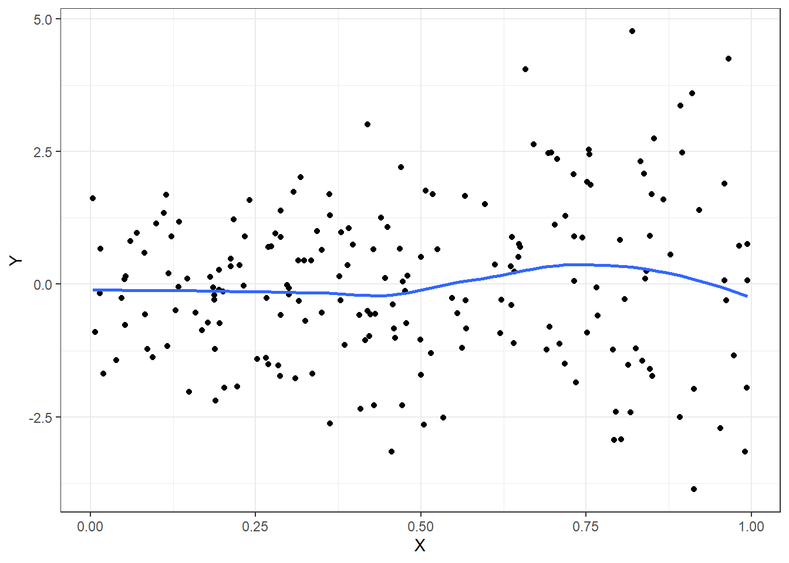
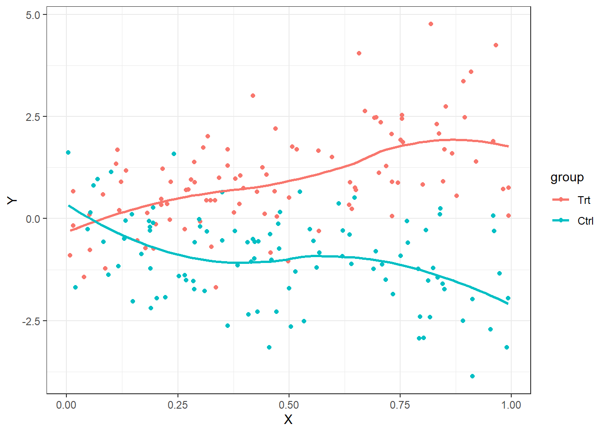
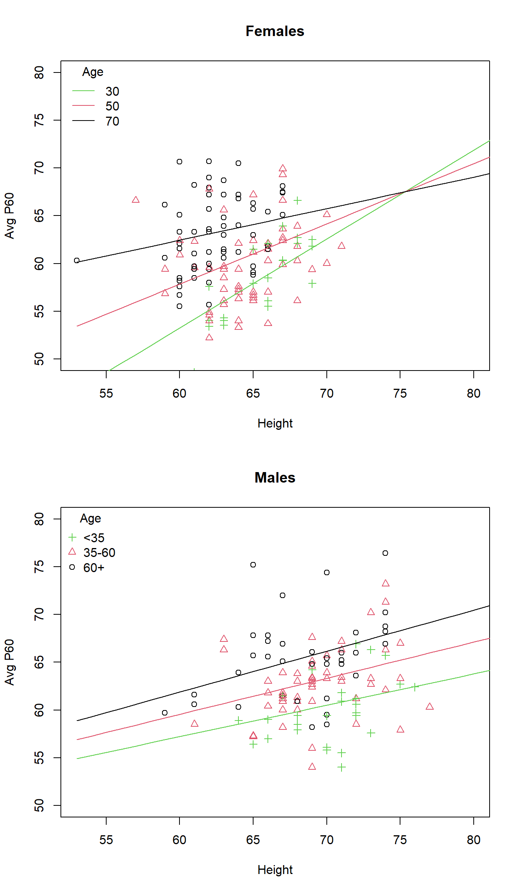
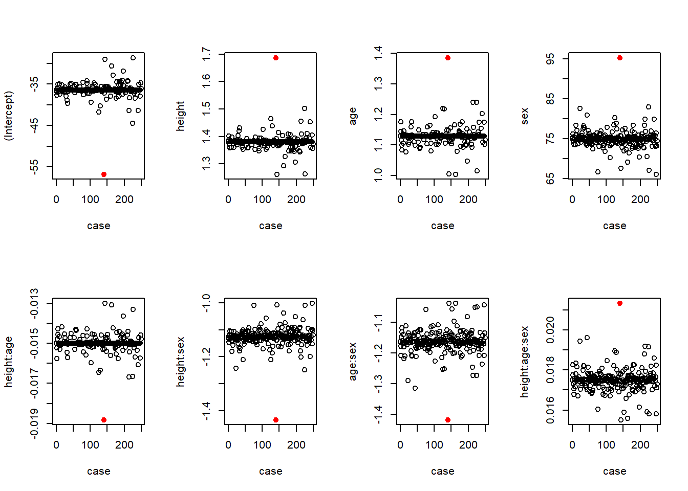
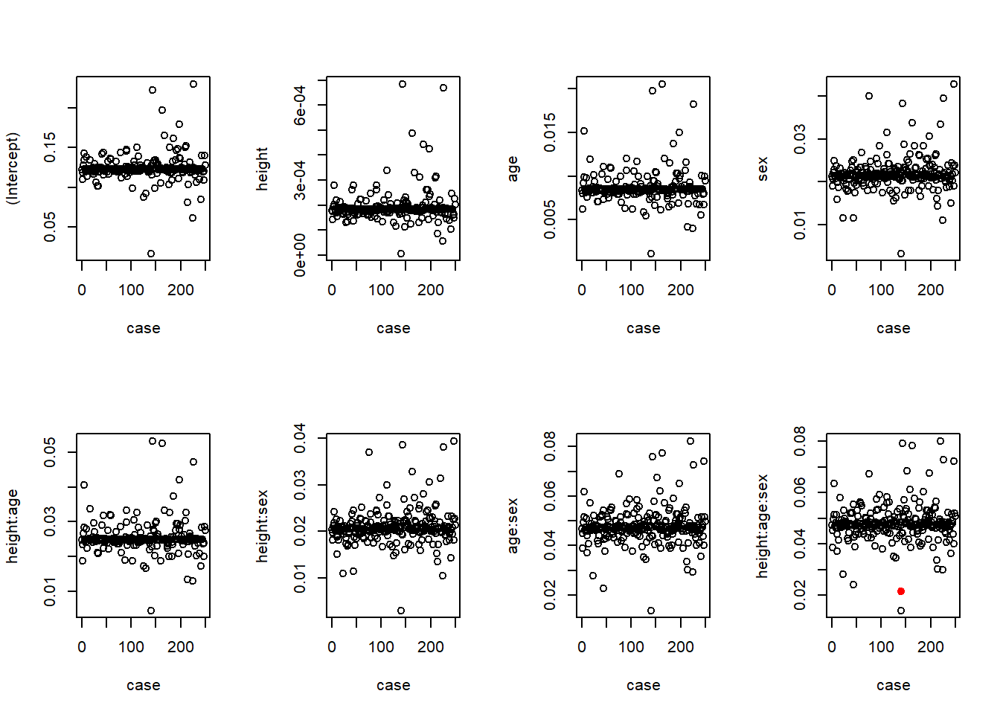
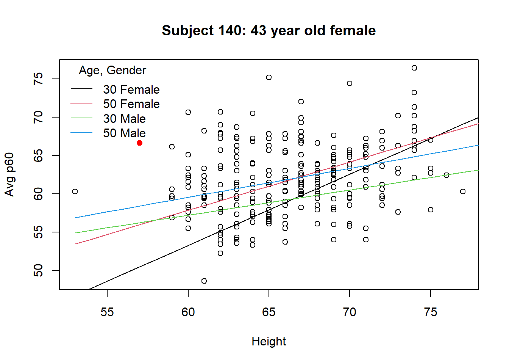

Code
library(rms)
library(ggplot2)
library(biostat3)
library(car)
tryCatch(source('pander_registry.R'), error = function(e) invisible(e))Lecture 10
October 30, 2025
library(rms)
library(ggplot2)
library(biostat3)
library(car)
tryCatch(source('pander_registry.R'), error = function(e) invisible(e))Scientific questions
Most often scientific questions are translated into comparing the distribution of some response variable across groups of interest
Groups are defined by the predictor of interest (POI)
Effect modification evaluates if the association between the outcome and POI is modified by strata defined by a third, modifying variable
Examples of effect modification
Binary effect modification: If we stratify by gender, we may get different answers to our scientific question in men and women
Continuous effect modification: If we stratify by age, we way get different answers to our scientific question in young and old
The association between the Response and the Predictor of Interest differs in strata defined by the effect modifier
Will get different answers to the scientific question within different strata defined by the effect modifier
Statistical term: “Interaction” between the effect modifier and the POI
Effect modification depends on the measure of effect that you choose
Choice of summary measure: mean, median, geometric mean, odds, hazard
Choice of comparisons across groups: differences, ratios
We will also do some model diagnostics through examples
When looking at effect modification, I am also worried that one point may be driving the interaction
Will go over case diagnostics in an example analysis of somatosensory evoked potential (SEP)
Graphical displays for effect modification
When analyzing difference of means of continuous data, stratified smooth curves of the data are non-parallel
Graphical techniques more difficult for odds and hazards
set.seed(1231)
n <- 200
grp <- rep(c(0,1),each=n/2)
X <- runif(n)
emplot <- data.frame(grp=grp,
X=X,
Y=.1*grp + 2*X -4*grp*X + rnorm(n)
)
emplot$group <- factor(emplot$grp, levels=0:1, labels=c("Trt","Ctrl"))
ggplot(emplot, aes(x=X, y=Y)) + geom_point() + geom_smooth(se=FALSE) + theme_bw()
ggplot(emplot, aes(x=X, y=Y, color=group, grp=group)) + geom_point() + geom_smooth(se=FALSE,) + theme_bw()
When the scientific question involves effect modification, analyses must be performed within each stratum separately
If we want to test the degree of effect modification or test statistically, the regression model will typically include
Predictor of interest
Effect modifier
A covariate modeling the interaction (usually a product)
| Non-Smoke | Smoke | Non-smoke | Smoke | |
| Women | 107.4 | 135.2 | 105.6 | 134.7 |
| Men | 122.7 | 174.7 | 121.1 | 174.1 |
| Diff | 15.3 | 39.5 | 15.5 | 39.4 |
| Ratio | 1.14 | 1.28 | 1.15 | 1.29 |
Model: \(Y = \beta_0 + \beta_M * \textrm{Male} + \beta_S * \textrm{Smoke} + \beta_{MS} * \textrm{Male} * \textrm{Smoke} + \epsilon\)
Male and Smoke are modeled using indicator variables
Male is 1 for males, 0 for females
Smoke is 1 for smokers, 0 for non-smokers
Estimates of the mean from the regression model are given in the following table
| Non-smoker (smoke=0) | Smoker (smoke=1) | |
| Women (male=0) | \(\beta_0\) | \(\beta_0 + \beta_S\) |
| Men (male=1) | \(\beta_0 + \beta_M\) | \(\beta_0 + \beta_S + \beta_M + \beta_{MS}\) |
| Difference | \(\beta_M\) | \(\beta_M + \beta_{MS}\) |
What is the scientific interpretation of \(\beta_{MS} = 0\)?
If true, the Male to Female difference in smokers \(= \beta_M\)
And, the Male to Female difference in non-smokers \(= \beta_M\)
In other words, the effect of gender is the same in smoker and non-smokers
Model: \(\textrm{log}(Y) = \beta_0 + \beta_M * \textrm{Male} + \beta_S * \textrm{Smoke} + \beta_{MS} * \textrm{Male} * \textrm{Smoke} + \epsilon\)
Male and Smoke are modeled using indicator variables
Male is 1 for males, 0 for females
Smoke is 1 for smokers, 0 for non-smokers
Estimates of the geometric mean from the regression model are given in the following table
| Non-smoker (smoke=0) | Smoker (smoke=1) | |
| Women (male=0) | \(e^{\beta_0}\) | \(e^{\beta_0 + \beta_S}\) |
| Men (male=1) | \(e^{\beta_0 + \beta_M}\) | \(e^{\beta_0 + \beta_S + \beta_M + \beta_{MS}}\) |
| Ratio | \(e^{\beta_M}\) | \(e^{\beta_M + \beta_{MS}}\) |
What is the scientific interpretation of \(\beta_{MS} = 0\)?
If true, the Male to Female ratio in smokers \(= e^{\beta_M}\)
And, the Male to Female ratio in non-smokers \(= e^{\beta_M}\)
In other words, the effect of gender is the same in smoker and non-smokers
We can obtain the means by male and smoking using summary statistics or from regression ouput
bp <- read.csv("data/bp.csv")
bp$logbp <- log(bp$bp)
bp$malesmoke <- bp$male * bp$smoke
library(dplyr)
bp %>% group_by(smoke, male) %>% summarize(meanbp=mean(bp))| smoke | male | meanbp |
|---|---|---|
| 0 | 0 | 107.4 |
| 0 | 1 | 122.7 |
| 1 | 0 | 135.2 |
| 1 | 1 | 174.7 |
m1 <- lm(bp ~ male + smoke + male*smoke, data=bp)
newdata <- expand.grid(male=0:1, smoke=0:1)
# Predicted means from the regression model. Matches above table
cbind(newdata, predict(m1, newdata))| male | smoke | predict(m1, newdata) |
|---|---|---|
| 0 | 0 | 107.4 |
| 1 | 0 | 122.7 |
| 0 | 1 | 135.2 |
| 1 | 1 | 174.7 |
# Four linear combinations using biostat3 function lincom and robust standard error
# to obtain the 4 means
lincom(m1, c("(Intercept)",
"(Intercept) + male",
"(Intercept) + smoke",
"(Intercept) + male + smoke + male:smoke"),
vcov=hccm(m1, type = "hc3"))| Estimate | 2.5 % | 97.5 % | F | Pr(>F) | |
|---|---|---|---|---|---|
| (Intercept) | 107.4 | 94.534 | 120.27 | 267.68 | 2.9961e-18 |
| (Intercept) + male | 122.7 | 109.34 | 136.06 | 323.98 | 1.3897e-19 |
| (Intercept) + smoke | 135.2 | 126.5 | 143.9 | 926.77 | 2.7458e-27 |
| (Intercept) + male + smoke + male:smoke | 174.7 | 164.4 | 185 | 1104.6 | 1.2961e-28 |
# Male effect in non-smokers
lincom(m1, "male", vcov=hccm(m1, type = "hc3"))| Estimate | 2.5 % | 97.5 % | F | Pr(>F) | |
|---|---|---|---|---|---|
| male | 15.3 | -3.2485 | 33.849 | 2.6137 | 0.11467 |
# Male effect in smokers
lincom(m1, "male + male:smoke", vcov=hccm(m1, type = "hc3"))| Estimate | 2.5 % | 97.5 % | F | Pr(>F) | |
|---|---|---|---|---|---|
| male + male:smoke | 39.5 | 26.013 | 52.987 | 32.948 | 1.5466e-06 |
# Smoking effect in females
lincom(m1, "smoke", vcov=hccm(m1, type = "hc3"))| Estimate | 2.5 % | 97.5 % | F | Pr(>F) | |
|---|---|---|---|---|---|
| smoke | 27.8 | 12.266 | 43.334 | 12.303 | 0.0012324 |
# Smoking effect in males
lincom(m1, "smoke + male:smoke", vcov=hccm(m1, type = "hc3"))| Estimate | 2.5 % | 97.5 % | F | Pr(>F) | |
|---|---|---|---|---|---|
| smoke + male:smoke | 52 | 35.128 | 68.872 | 36.491 | 6.131e-07 |
Is the effect of smoking on mean bp modified by male? Is the effect of male on mean bp modified by smoking? Effect modification is symmetric. The answer to these two questions is answered by testing for the significance of the interaction term between male and smoking. The following answers both questions.
# Effect modification
lincom(m1, "male:smoke", vcov=hccm(m1, type = "hc3"))| Estimate | 2.5 % | 97.5 % | F | Pr(>F) | |
|---|---|---|---|---|---|
| male:smoke | 24.2 | 1.2662 | 47.134 | 4.2774 | 0.045865 |
We can obtain the geometric means by male and smoking using summary statistics or from regression ouput
library(dplyr)
bp %>% group_by(smoke, male) %>% summarize(geomeanbp=exp(mean(log(bp))))| smoke | male | geomeanbp |
|---|---|---|
| 0 | 0 | 105.56 |
| 0 | 1 | 121.07 |
| 1 | 0 | 134.65 |
| 1 | 1 | 174.08 |
m2 <- lm(logbp ~ male + smoke + male*smoke, data=bp)
newdata <- expand.grid(male=0:1, smoke=0:1)
# Predicted means from the regression model. Matches above table
cbind(newdata, exp(predict(m2, newdata)))| male | smoke | exp(predict(m2, newdata)) |
|---|---|---|
| 0 | 0 | 105.56 |
| 1 | 0 | 121.07 |
| 0 | 1 | 134.65 |
| 1 | 1 | 174.08 |
# Four linear combinations using biostat3 function lincom and robust standard error
# to obtain the 4 means
lincom(m2, c("(Intercept)",
"(Intercept) + male",
"(Intercept) + smoke",
"(Intercept) + male + smoke + male:smoke"),
vcov=hccm(m2, type = "hc3"),
eform=TRUE)| Estimate | 2.5 % | 97.5 % | F | Pr(>F) | |
|---|---|---|---|---|---|
| (Intercept) | 105.56 | 92.428 | 120.55 | 4727.3 | 8.5796e-40 |
| (Intercept) + male | 121.07 | 107.92 | 135.83 | 6681.2 | 1.7619e-42 |
| (Intercept) + smoke | 134.65 | 126.71 | 143.1 | 24947 | 9.4824e-53 |
| (Intercept) + male + smoke + male:smoke | 174.08 | 164.32 | 184.41 | 30743 | 2.2174e-54 |
# Male effect in non-smokers
lincom(m2, "male", vcov=hccm(m2, type = "hc3"), eform=TRUE)| Estimate | 2.5 % | 97.5 % | F | Pr(>F) | |
|---|---|---|---|---|---|
| male | 1.147 | 0.96215 | 1.3672 | 2.3394 | 0.13488 |
# Male effect in smokers
lincom(m2, "male + male:smoke", vcov=hccm(m2, type = "hc3"), eform=TRUE)| Estimate | 2.5 % | 97.5 % | F | Pr(>F) | |
|---|---|---|---|---|---|
| male + male:smoke | 1.2928 | 1.1888 | 1.4058 | 36.049 | 6.863e-07 |
# Smoking effect in females
lincom(m2, "smoke", vcov=hccm(m2, type = "hc3"), eform=TRUE)| Estimate | 2.5 % | 97.5 % | F | Pr(>F) | |
|---|---|---|---|---|---|
| smoke | 1.2756 | 1.1023 | 1.4763 | 10.668 | 0.002397 |
# Smoking effect in males
lincom(m2, "smoke + male:smoke", vcov=hccm(m2, type = "hc3"), eform=TRUE)| Estimate | 2.5 % | 97.5 % | F | Pr(>F) | |
|---|---|---|---|---|---|
| smoke + male:smoke | 1.4379 | 1.2643 | 1.6353 | 30.604 | 2.9341e-06 |
Is the effect of smoking on geometric mean bp modified by male? Is the effect of male on geometric mean bp modified by smoking? Effect modification is symmetric. The answer to these two questions is answered by testing for the significance of the interaction term between male and smoking. The following answers both questions.
# Effect modification
lincom(m2, "male:smoke", vcov=hccm(m2, type = "hc3"), eform=TRUE)| Estimate | 2.5 % | 97.5 % | F | Pr(>F) | |
|---|---|---|---|---|---|
| male:smoke | 1.1272 | 0.92777 | 1.3694 | 1.4524 | 0.23601 |
Similar Stata output to obtain the results.
. insheet using "/home/slaughjc/docs/teaching/b312/doc/effectmod/bp.csv", clear
(3 vars, 40 obs)
. gen logbp = log(bp)
. tabulate male smoke, summarize(bp) nostandard nofreq noobs
Means of bp
| smoke
male | 0 1 | Total
-----------+----------------------+----------
0 | 107.4 135.2 | 121.3
1 | 122.7 174.7 | 148.7
-----------+----------------------+----------
Total | 115.05 154.95 | 135
. di 122.7 - 107.4
15.3
. di 122.7 / 107.4
1.1424581
.
. di 174.7 - 135.2
39.5
. di 174.7 / 135.2
1.2921598
. gen malesmoke = male*smoke
.
. ************************************************
. * Linear Regression: Inference about means *
. ************************************************
. regress bp male smoke malesmoke, robust
Linear regression Number of obs = 40
F( 3, 36) = 28.05
Prob > F = 0.0000
R-squared = 0.6918
Root MSE = 17.552
------------------------------------------------------------------------------
| Robust
bp | Coef. Std. Err. t P>|t| [95% Conf. Interval]
-------------+----------------------------------------------------------------
male | 15.3 8.97806 1.70 0.097 -2.908349 33.50835
smoke | 27.8 7.518865 3.70 0.001 12.55103 43.04897
malesmoke | 24.2 11.10065 2.18 0.036 1.686837 46.71316
_cons | 107.4 6.227537 17.25 0.000 94.76997 120.03
------------------------------------------------------------------------------
.
. * Get the means presented in the Table
. * Method 1: The adjust command
. * Method 2: Four linear combos
.
. adjust, by(male smoke)
---------------------------------------------------------------------------------------
Dependent variable: bp Command: regress
Variable left as is: malesmoke
---------------------------------------------------------------------------------------
------------------------
| smoke
male | 0 1
----------+-------------
0 | 107.4 135.2
1 | 122.7 174.7
------------------------
Key: Linear Prediction
. lincom _cons
( 1) _cons = 0
------------------------------------------------------------------------------
bp | Coef. Std. Err. t P>|t| [95% Conf. Interval]
-------------+----------------------------------------------------------------
(1) | 107.4 6.227537 17.25 0.000 94.76997 120.03
------------------------------------------------------------------------------
. lincom _cons + male
( 1) male + _cons = 0
------------------------------------------------------------------------------
bp | Coef. Std. Err. t P>|t| [95% Conf. Interval]
-------------+----------------------------------------------------------------
(1) | 122.7 6.467096 18.97 0.000 109.5841 135.8159
------------------------------------------------------------------------------
. lincom _cons + smoke
( 1) smoke + _cons = 0
------------------------------------------------------------------------------
bp | Coef. Std. Err. t P>|t| [95% Conf. Interval]
-------------+----------------------------------------------------------------
(1) | 135.2 4.213207 32.09 0.000 126.6552 143.7448
------------------------------------------------------------------------------
. lincom _cons + male + smoke + malesmoke
( 1) male + smoke + malesmoke + _cons = 0
------------------------------------------------------------------------------
bp | Coef. Std. Err. t P>|t| [95% Conf. Interval]
-------------+----------------------------------------------------------------
(1) | 174.7 4.98676 35.03 0.000 164.5864 184.8136
------------------------------------------------------------------------------
.
. * Now, look at the important differences
.
. lincom male
( 1) male = 0
------------------------------------------------------------------------------
bp | Coef. Std. Err. t P>|t| [95% Conf. Interval]
-------------+----------------------------------------------------------------
(1) | 15.3 8.97806 1.70 0.097 -2.908349 33.50835
------------------------------------------------------------------------------
. lincom male + malesmoke
( 1) male + malesmoke = 0
------------------------------------------------------------------------------
bp | Coef. Std. Err. t P>|t| [95% Conf. Interval]
-------------+----------------------------------------------------------------
(1) | 39.5 6.528314 6.05 0.000 26.25996 52.74004
------------------------------------------------------------------------------
. lincom smoke
( 1) smoke = 0
------------------------------------------------------------------------------
bp | Coef. Std. Err. t P>|t| [95% Conf. Interval]
-------------+----------------------------------------------------------------
(1) | 27.8 7.518865 3.70 0.001 12.55103 43.04897
------------------------------------------------------------------------------
. lincom smoke + malesmoke
( 1) smoke + malesmoke = 0
------------------------------------------------------------------------------
bp | Coef. Std. Err. t P>|t| [95% Conf. Interval]
-------------+----------------------------------------------------------------
(1) | 52 8.166463 6.37 0.000 35.43765 68.56235
------------------------------------------------------------------------------
. lincom malesmoke
( 1) malesmoke = 0
------------------------------------------------------------------------------
bp | Coef. Std. Err. t P>|t| [95% Conf. Interval]
-------------+----------------------------------------------------------------
(1) | 24.2 11.10065 2.18 0.036 1.686837 46.71316
------------------------------------------------------------------------------
.
. . tabulate male smoke, summarize(logbp) nostandard nofreq noobs
Means of logbp
| smoke
male | 0 1 | Total
-----------+----------------------+----------
0 | 4.6592534 4.9027077 | 4.7809805
1 | 4.7963605 5.1595116 | 4.9779361
-----------+----------------------+----------
Total | 4.7278069 5.0311096 | 4.8794583
.
. di exp(4.6592534)
105.55724
. di exp(4.7963605)
121.06898
. di exp(4.9027077)
134.65389
. di exp(5.1595116)
174.07941
.
. di exp(4.7963605) - exp(4.6592534)
15.51174
. di exp(4.7963605) / exp(4.6592534)
1.146951
.
. di exp(5.1595116) - exp(4.9027077)
39.425526
. di exp(5.1595116) / exp(4.9027077)
1.2927916
.
. ***********************************************************
. * Linear Regression: Inference about geometric means *
. ***********************************************************
.
.
. * Get the log geometric means presented in the Table
. * Method 1: The adjust command
. * Method 2: Four linear combos
. * After either method, take exp(x) to get geometric mean
.
. regress logbp male smoke malesmoke, robust
Linear regression Number of obs = 40
F( 3, 36) = 28.00
Prob > F = 0.0000
R-squared = 0.6271
Root MSE = .14898
------------------------------------------------------------------------------
| Robust
logbp | Coef. Std. Err. t P>|t| [95% Conf. Interval]
-------------+----------------------------------------------------------------
male | .1371071 .0850408 1.61 0.116 -.0353636 .3095778
smoke | .2434543 .0707116 3.44 0.001 .1000444 .3868641
malesmoke | .1196969 .0942253 1.27 0.212 -.0714009 .3107946
_cons | 4.659253 .0642883 72.47 0.000 4.528871 4.789636
------------------------------------------------------------------------------
. adjust, by(male smoke)
---------------------------------------------------------------------------------------
Dependent variable: logbp Command: regress
Variable left as is: malesmoke
---------------------------------------------------------------------------------------
----------------------------
| smoke
male | 0 1
----------+-----------------
0 | 4.65925 4.90271
1 | 4.79636 5.15951
----------------------------
Key: Linear Prediction
. lincom _cons
( 1) _cons = 0
------------------------------------------------------------------------------
logbp | Coef. Std. Err. t P>|t| [95% Conf. Interval]
-------------+----------------------------------------------------------------
(1) | 4.659253 .0642883 72.47 0.000 4.528871 4.789636
------------------------------------------------------------------------------
. lincom _cons + male
( 1) male + _cons = 0
------------------------------------------------------------------------------
logbp | Coef. Std. Err. t P>|t| [95% Conf. Interval]
-------------+----------------------------------------------------------------
(1) | 4.79636 .0556682 86.16 0.000 4.68346 4.909261
------------------------------------------------------------------------------
. lincom _cons + smoke
( 1) smoke + _cons = 0
------------------------------------------------------------------------------
logbp | Coef. Std. Err. t P>|t| [95% Conf. Interval]
-------------+----------------------------------------------------------------
(1) | 4.902708 .0294475 166.49 0.000 4.842985 4.96243
------------------------------------------------------------------------------
. lincom _cons + male + smoke + malesmoke
( 1) male + smoke + malesmoke + _cons = 0
------------------------------------------------------------------------------
logbp | Coef. Std. Err. t P>|t| [95% Conf. Interval]
-------------+----------------------------------------------------------------
(1) | 5.159512 .0279162 184.82 0.000 5.102895 5.216128
------------------------------------------------------------------------------
.
.
. * Now, look at the important ratios
.
. lincom male, eform
( 1) male = 0
------------------------------------------------------------------------------
logbp | exp(b) Std. Err. t P>|t| [95% Conf. Interval]
-------------+----------------------------------------------------------------
(1) | 1.146951 .0975376 1.61 0.116 .9652544 1.36285
------------------------------------------------------------------------------
. lincom male + malesmoke, eform
( 1) male + malesmoke = 0
------------------------------------------------------------------------------
logbp | exp(b) Std. Err. t P>|t| [95% Conf. Interval]
-------------+----------------------------------------------------------------
(1) | 1.292792 .0524572 6.33 0.000 1.190663 1.40368
------------------------------------------------------------------------------
. lincom smoke, eform
( 1) smoke = 0
------------------------------------------------------------------------------
logbp | exp(b) Std. Err. t P>|t| [95% Conf. Interval]
-------------+----------------------------------------------------------------
(1) | 1.275648 .0902032 3.44 0.001 1.10522 1.472356
------------------------------------------------------------------------------
. lincom malesmoke, eform
( 1) malesmoke = 0
------------------------------------------------------------------------------
logbp | exp(b) Std. Err. t P>|t| [95% Conf. Interval]
-------------+----------------------------------------------------------------
(1) | 1.127155 .1062065 1.27 0.212 .9310886 1.364509
------------------------------------------------------------------------------By design or mistake, we sometimes do not model effect modification
Might perform
Unadjusted analysis: POI only
Adjusted analysis: POI and third variable, but no interaction term
If effect modification exists, an unadjusted analysis will give different results according to the association between the POI and effect modifier in the sample
If the POI and the effect modifier are not associated
Unadjusted analysis tends toward an (approximate) weighted average of the stratum specific effects
With means, exactly a weighted average
With odds and hazards, an approximate weighted average (because they are non-linear functions of the mean)
If the POI and the effect modifier are associated in the sample
The “average” effect is confounded and thus unreliable
(variables can be both effect modifiers and confounders)
If effect modification exists, an analysis adjusting only for the third variable (but no interaction) will tend toward a weight average of the stratum specific effects
Typical model for effect modification will include
Main effects
\(X\), or predictors involving only \(X\)
\(W\), or predictors involving only \(W\)
Interactions
\[\begin{aligned} g(\theta | X_i , W_i) & = & \beta_0 + \beta_1 \times X_i + \beta_2 \times W_i + \beta_3 \times (XW)_i \\ g(\theta | X_i , W_i) & = & \beta_0 + \beta_1 \times X_i + \beta_2 \times W_i + \beta_3 \times X_i \times W_i\end{aligned}\]
Interpretation of parameters more difficult
Can try the usual approach of making comparisons of \(\theta\) “across groups differing by 1 unit in corresponding predictor but agreeing in other modeled predictors.”
However, terms involving two scientific variables makes this approach difficult
Intercept
\(\beta_0\): corresponds to \(X=0\), \(W=0\)
May lack scientific meaning
Slopes for main effects
\(\beta_1\): corresponds to 1 unit difference in \(X\), holding \(W\) and \((X \times W)\) constant
So, a 1 unit difference in \(X\) when \(W=0\)
May lack scientific meaning
\(\beta_2\): corresponds to 1 unit difference in \(W\), holding \(X\) and \((X \times W)\) constant
So, a 1 unit difference in \(W\) when \(X=0\)
May lack scientific meaning
Slope for interaction (difficult)
\(\beta_3\): corresponds to 1 unit difference in \((X \times W)\), holding \(X\) and \(W\) constant
Consider fixing stratum \(W_i = w\). Then, \[\begin{aligned} g(\theta | X_i , W_i = w) & = & \beta_0 + \beta_1 \times X_i + \beta_2 \times w + \beta_3 \times X_i \times w \\ & = & (\beta_0 + \beta_2 \times w) + (\beta_1 + \beta_3 \times w) \times X_i\end{aligned}\]
Intercept: \((\beta_0 + \beta_2 \times w)\) corresponds to \(X_i = 0\)
Slope: \((\beta_1 + \beta_3 \times w)\) compares groups differing by 1 unit in \(X\)
\(\beta_3\): Difference in \(X\) slope per 1 unit difference in \(W\)
Example: \(Y\) is height, \(X\) is age, \(W\) is gender
Consider fixing stratum \(X_i = x\). Then, \[\begin{aligned} g(\theta | X_i = x , W_i) & = & \beta_0 + \beta_1 \times x + \beta_2 \times W_i + \beta_3 \times x \times W_i \\ & = & (\beta_0 + \beta_1 \times x) + (\beta_2 + \beta_3 \times x) \times W_i\end{aligned}\]
Intercept: \((\beta_0 + \beta_1 \times x)\) corresponds to \(W_i = 0\)
Slope: \((\beta_2 + \beta_3 \times x)\) compares groups differing by 1 unit in \(W\)
\(\beta_3\): Difference in \(W\) slope per 1 unit difference in \(X\)
Note the implied symmetry
If \(W\) modifies the association between \(X\) and \(Y\), then \(X\) modifies the association between \(W\) and \(Y\)
Statistically, there is no distinction between which variable you call your “effect modifier” and your “POI”
Aside: Does confounding have to be symmetric?
\(g(\theta | X_i , W_i) = \beta_0 + \beta_1 \times X_i + \beta_2 \times W_i + \beta_3 \times X_i \times W_i\)
Inference for effect modification
No effect modification if \(\beta_3 = 0\)
Hence, to test for existence of effect modification we consider \(H_0: \beta_3 = 0\)
Inference for main effect slope
Interpretation of \(\beta_1 = 0\)
Same intercept in strata defined by \(W\)
Generally a very uninteresting question
We rarely make inference on main effects slopes by themselves
Inference about effect of \(X\)
Response parameter not associated with \(X\) if \(\beta_1 = 0\) AND \(\beta_3 = 0\)
We will need to construct special tests that both parameters are simultaneously \(0\)
\(H_0: \beta_1 = 0, \beta_3 = 0\)
Note that the Wald tests given in regression output only consider one slope at a time
Testing multiple slopes in Stata
Stata has an easy method for performing a test that multiple parameters are simultaneously \(0\)
First, perform any regression command
Then, use test var1 var2 ...
Provides P value of the hypothesis test based on most recently executed regression command
Will work on any type of regression
Question: Does sex modify the association between mean salary and administrative duties?
With two binary variables (sex, admin), modeling the interaction using a product is the obvious choice
\(E[Salary | Male, Adm] = \beta_0 + \beta_1 \times Adm_i + \beta_2 \times Male_i + \beta_3 \times Adm_i \times Male_i\)
. gen maleadmin = male*admin
. regress salary admin male maleadmin, robust
Linear regression Number of obs = 1597
F( 3, 1593) = 125.26
Prob > F = 0.0000
R-squared = 0.1615
Root MSE = 1866.9
------------------------------------------------------------------------------
| Robust
salary | Coef. Std. Err. t P>|t| [95% Conf. Interval]
-------------+----------------------------------------------------------------
admin | 1489.471 292.628 5.09 0.000 915.4946 2063.448
male | 1226.234 95.37051 12.86 0.000 1039.17 1413.299
maleadmin | 461.9072 341.6782 1.35 0.177 -208.2789 1132.093
_cons | 5280.373 72.61871 72.71 0.000 5137.934 5422.811
------------------------------------------------------------------------------------------------------------
| male
admin | 0 1
----------+-------------------
0 | 5280.373 6506.607
1 | 6769.844 8457.985
------------------------------Does sex modify the association between mean salary and administrative duties?
Model estimates that the administrative supplement is $462 per month more for men than women
95% confident that the true difference is between $1132 more and $208 less
Not statistically significant (\(p = 0.177\))
------------------------------------------------------------------------------
| Robust
salary | Coef. Std. Err. t P>|t| [95% Conf. Interval]
-------------+----------------------------------------------------------------
admin | 1489.471 292.628 5.09 0.000 915.4946 2063.448
male | 1226.234 95.37051 12.86 0.000 1039.17 1413.299
maleadmin | 461.9072 341.6782 1.35 0.177 -208.2789 1132.093
_cons | 5280.373 72.61871 72.71 0.000 5137.934 5422.811
------------------------------------------------------------------------------Is sex associated with mean salary?
Need to test that the slope parameter for male and maleadmin are simultaneously \(0\)
\(H_0: \beta_2 = 0, \beta_3 = 0\)
\(H_1:\) At least one not equal
. test male maleadmin
( 1) male = 0
( 2) maleadmin = 0
F( 2, 1593) = 95.90
Prob > F = 0.0000Are administrative duties associated with mean salary?
Need to test that the slope parameter for admin and maleadmin are simultaneously \(0\)
\(H_0: \beta_1 = 0, \beta_3 = 0\)
\(H_1:\) At least one not equal
. test admin maleadmin
( 1) admin = 0
( 2) maleadmin = 0
F( 2, 1593) = 74.15
Prob > F = 0.0000Modeling interactions with continuous predictors is conceptually more complicated
Is a multiplicative model at all a reasonable model for the data?
Nonetheless, this is the most common way we detect interactions
We want to find normal ranges for somatosensory evoked potential (SEP)
As a first step, we want to consider important predictors of nerve conduction times
If any variables such as sex, age, height, race, etc. are important predictors of nerve conduction times, then it would make most sense to obtain normal ranges within such groups
Scientifically, we might expect that height, age, and sex are related to the nerve conduction time
Nerve length should matter, and height is a surrogate for nerve length
Age might affect nerve conduction times (people slow down with age)
Sex: Males have worse nervous systems
Prior to looking at the data, we can also consider the possibility that interactions between these variables might be important
Height and age interaction? Do we expect…
Difference in conduction times comparing 6 foot tall and 5 foot tall 20 year old, to be the same as …
Difference in conduction times comparing 6 foot tall and 5 foot tall 50 year old, to be the same as …
Difference in conduction times comparing 6 foot tall and 5 foot tall 80 year old?
We might suspect such an interaction due to the fact that height may not be as good a surrogate for nerve length in older people
Thus, in young people, differences in height probably are a better measure of nerve length than in old people
Tall old people probably have been tall always
Short old people will include some who were taller when they were young
We can also consider the possibility of three way interactions between height, age, and sex
Osteoporosis affects women far more than men
We might expect the height-age interaction to be greatest in women and not so important in men
A two-way interaction between height and age that is different between men and women defines a three way interaction between height, age, and sex
To define a regression model with interactions, we must create variables to model the three way interaction term
Furthermore, it is a very good idea to include all main effects and lower order interactions in the model too
Main effects: The individual variables which contribute to the interaction
Lower order terms: All interactions that involve some combination of the variables which contribute to the interaction
Most often, we lack sufficient information to be able to guess what the true form of an interaction might be
The most popular approach is thus to consider multiplicative interactions
Create a new variable by merely multiplying the two (or more) interacting predictors
For the problem, we will create the variables
HA = Height * Age
HM = Height * Male
AM = Age * Male
HAM = Height * Age * Male
Interpretation: In the presence of higher order terms (powers, interactions) interpretation of parameters is not easy
We can no longer use “the change associated with a 1-unit difference in predictor holding other variables constant”
It is generally impossible to hold other variables constant when changing a covariate involved in an interaction
When it is not impossible, it is often uninteresting scientifically
\(E[p60 | Ht, Age, Male] = \beta_0 + \beta_H Ht + \beta_A Age + \beta_M Male + \beta_{HA} HA + \beta_{HM} HM + \beta_{AM} AM + \beta_{HAM} HAM\)
p60 - Height relationship for Age = a:
| Sex | Intercept | Slope |
|---|---|---|
| F | \((\beta_0 + \beta_A a)\) | \((\beta_H + \beta_{HA} a)\) |
| M | \((\beta_0 + \beta_M + (\beta_A + \beta_{AM}) a)\) | \((\beta_H + \beta_{HM} + (\beta_{HA} + \beta_{HAM}) a)\) |
From the above, we see the importance of including the main effects and lower order terms
E.g., leaving out the height-sex interaction is tantamount that claiming the p60 - height relationship among newborns is the same for the two sexes
. regress p60 height age male ha hm am ham
------------------------------------------------------------------------------
p60 | Coef. Std. Err. t P>|t| [95% Conf. Interval]
-------------+----------------------------------------------------------------
height | 1.380275 .362647 3.81 0.000 .6659271 2.094622
age | 1.129423 .4249166 2.66 0.008 .2924161 1.96643
male | 74.95773 32.30708 2.32 0.021 11.31875 138.5967
ha | -.0149985 .0066386 -2.26 0.025 -.0280754 -.0019217
hm | -1.127006 .4825427 -2.34 0.020 -2.077526 -.1764858
am | -1.162866 .5817348 -2.00 0.047 -2.308776 -.0169558
ham | .0175005 .0087708 2.00 0.047 .0002236 .0347773
_cons | -36.44286 23.48684 -1.55 0.122 -82.70758 9.82187
------------------------------------------------------------------------------If we restrict analysis to just females
Point estimates are the same as in the saturated model
Inference (CIs, p-values) can differ due to the estimate of the residual standard error
Note that restricting by age or height would give different estimates because we are still borrowing information across groups
. regress p60 height age ha if male==0
------------------------------------------------------------------------------
p60 | Coef. Std. Err. t P>|t| [95% Conf. Interval]
-------------+----------------------------------------------------------------
height | 1.380275 .3614558 3.82 0.000 .6653291 2.09522
age | 1.129423 .4235208 2.67 0.009 .2917155 1.967131
ha | -.0149985 .0066168 -2.27 0.025 -.0280863 -.0019108
_cons | -36.44286 23.40969 -1.56 0.122 -82.74631 9.860598
------------------------------------------------------------------------------Interpreting all of the estimates can be difficult
Can graph predicted values, which should be multiple linear for this model
Note that age is a continuous variable, so to understand how age modified the association between p60 and height, we will fix age at some values
Estimated association between p60 and height for Females
| Age | Intercept | Slope |
|---|---|---|
| a | \(\hat{\beta}_0 + \hat{\beta}_A \times a\) | \(\hat{\beta}_H + \hat{\beta}_{HA} \times a\) |
| a | \(-36.44 + 1.129 \times a\) | \(1.38 - 0.01499 \times a\) |
Estimated association between p60 and height in Males
| Age | Intercept | Slope |
|---|---|---|
| a | \(\hat{\beta}_0 + \hat{\beta}_M + (\hat{\beta}_A + \hat{\beta}_{AM}) a\) | \(\hat{\beta}_H + \hat{\beta}_{HM} + (\hat{\beta}_{HA} + \hat{\beta}_{HAM}) a\) |
| a | \(-36.44 + 74.96 + (1.13 - 1.16) a\) | \(1.38 - 1.13 + (-0.015 + 0.0175) a\) |
| a | \(38.51 - 0.033 \times a\) | \(0.25 + 0.0025 \times a\) |
Which corresponds to a regression including just males
. regress p60 height age ha if male==1
------------------------------------------------------------------------------
p60 | Coef. Std. Err. t P>|t| [95% Conf. Interval]
-------------+----------------------------------------------------------------
height | .2532689 .3196022 0.79 0.430 -.3801724 .8867101
age | -.0334425 .3989042 -0.08 0.933 -.8240577 .7571727
ha | .0025019 .0057549 0.43 0.665 -.0089041 .0139079
_cons | 38.51487 22.27228 1.73 0.087 -5.628068 82.65781
------------------------------------------------------------------------------library(rms)
d2 <- stata.get("http://biostat.app.vumc.org/wiki/pub/Main/CourseBios312/sep.dta")
d2$p60 <- (d2$p60R + d2$p60L) /2
m.female <- lm(p60 ~ height + age + height:age, data=d2, subset=sex==0)
m.male <- lm(p60 ~ height + age + height:age, data=d2, subset=sex==1)
d2$agecat <- (d2$age < 35) + (d2$age < 60) + 1
par(mfrow=c(2,1))
with(d2, plot(height[sex==0], p60[sex==0], pch=agecat[sex==0], col=agecat[sex==0], xlim=c(53,80),
ylim=c(50,80), ylab="Avg P60", xlab="Height", main="Females"))
lines(53:83, predict(m.female, newdata=data.frame(age=30, height=53:83)), col=3)
lines(53:83, predict(m.female, newdata=data.frame(age=50, height=53:83)), col=2)
lines(53:83, predict(m.female, newdata=data.frame(age=70, height=53:83)), col=1)
legend("topleft", c("30","50","70"), lty=1, col=c(3,2,1), bty="n", title="Age")
with(d2, plot(height[sex==1], p60[sex==1], pch=agecat[sex==1], col=agecat[sex==1], xlim=c(53,80),
ylim=c(50,80), ylab="Avg P60", xlab="Height", main="Males"))
lines(53:83, predict(m.male, newdata=data.frame(age=30, height=53:83)), col=3)
lines(53:83, predict(m.male, newdata=data.frame(age=50, height=53:83)), col=2)
lines(53:83, predict(m.male, newdata=data.frame(age=70, height=53:83)), col=1)
legend("topleft", c("<35","35-60","60+"), pch=c(3,2,1), col=c(3,2,1), bty="n",title="Age")
From the output, we find a statistically significant three way interaction (p = 0.047)
This would argue for making prediction based on a model that include the 3-way interaction
However, interactions might be significant only because of a single outlier
If that were the case, I might choose not to include the interaction
But, I would include the influential data point
We will look at the results of a “diagnosis of influential observations now, and cover in more detail later
In particular, I am interested in ensuring that the evidence for an interaction is not based solely on a single person’s observation
Hence, I consider 250 different regression in which I leave out each subject in turn
I plot the slope estimates and p-values for each variable as a function of which case I left out
For comparison, case 0 corresponds to using the full dataset
Changes in coefficients (\(\beta\)s)
# Calculate changes in p-values and coefficients
# Create some variables to store the results
id <- 1:length(d2$p60)
case <- 0:length(d2$p60)
# p is number of predictors
p <- 8
coeffs <- matrix(NA, nrow=length(case), ncol=p)
pvals <- matrix(NA, nrow=length(case), ncol=p)
# Run the regression model with 1 observation deleted, save the coeffs and p-vals
# Note that case=0 corresponds to the full model (no observations deleted)
for (i in case) {
m <- lm(p60 ~ height*age*sex, data=d2, subset=(id!=i))
coeffs[i+1,] <- coef(m)
pvals[i+1,] <- summary(m)$coeff[,4]
}
# Plot the regression coefficients by which subject was deleted; highlight the unusual subject
par(mfrow=c(2,4))
for(i in 1:8) {
plot(case, coeffs[,i], ylab=(names(coef(m))[i]))
points(x=140, y=coeffs[141,i], pch=19, col="Red")
}
# Plot the p-values for the regression coefficients by which subject was deleted
par(mfrow=c(2,4))
for(i in 1:8) {
plot(case, pvals[,i], ylab=(names(coef(m))[i]))
points(x=140, y=coeffs[141,i], pch=19, col="Red")
}
Contrary to my fear, the only influential observation actually lessened the evidence of an interaction
When observation 140 is removed from the data, the evidence of an interaction is a larger estimate and lower p-value
We can examine the scatterplot to see why subject 140 might be so influential
Subject 140 is a 43 year old, 57 inch female with an average p60 of 66.6
# Scatter plot with subject 140 highlighted
with(d2, plot(height, p60, xlab="Height", ylab="Avg p60", main="Subject 140: 43 year old female"))
with(d2, points(height[140], p60[140], pch=19, col="Red"))
lines(53:83, predict(m.female, newdata=data.frame(age=30, height=53:83)), col=1)
lines(53:83, predict(m.female, newdata=data.frame(age=50, height=53:83)), col=2)
lines(53:83, predict(m.male, newdata=data.frame(age=30, height=53:83)), col=3)
lines(53:83, predict(m.male, newdata=data.frame(age=50, height=53:83)), col=4)
legend("topleft", c("30 Female","50 Female","30 Male", "50 Male"),
lty=1, col=1:4, bty="n", title="Age, Gender")
So, what do I do with observation 140?
From the influence diagnostics, I am still comfortable that the data suggest a 3-way interaction
Personally, I do not remove observation 140 when making prediction intervals
I do not know why observation 140 is unusual
It is possible that people like 140 are actually more prevalent in the population than my sample would suggest
My best guess is observation 140 represents only \(0.4\%\) of the population, but would still leave her in the analysis
Removing subject 140 could bias parameter estimates, so I would rarely remove observations based on diagnostics